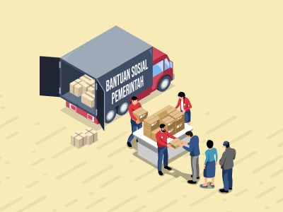

Profil Singkat
SiBanTal (Bantuan Sosial) adalah sistem informasi yang dirancang untuk membantu perangkat desa dalam mengelola pendataan, verifikasi, dan penyaluran bantuan sosial secara terpusat dan transparan. Sistem ini mendukung integrasi bantuan dari pemerintah maupun donasi individu atau pihak lain dalam satu platform terpadu.
Visi dan Misi
Visi:
Mewujudkan sistem bantuan sosial desa yang transparan, terintegrasi, dan tepat sasaran.Misi:
- Menyediakan sistem pendataan warga yang mudah digunakan oleh perangkat desa
- Mempermudah proses verifikasi dan validasi calon penerima bantuan
- Menggabungkan bantuan pemerintah dan donasi masyarakat dalam satu sistem terpusat
- Menyajikan laporan distribusi bantuan secara transparan dan terdokumentasi